БЛОК ДВИГАТЕЛЯ (для моделей с DPF) > СНЯТИЕ |
| 1. СНИМИТЕ ГЕНЕРАТОР В СБОРЕ |
 |
Выверните 2 болта и снимите генератор.
| 2. СНИМИТЕ КРОНШТЕЙН ГЕНЕРАТОРА |
 |
Выверните болт и снимите кронштейн генератора.
| 3. СНИМИТЕ ОПОРНЫЙ РОЛИК В СБОРЕ (для моделей с системой кондиционирования) |
Выверните болт и снимите крышку ролика, опорный ролик и распорную втулку.
| 4. СНИМИТЕ ОПОРНЫЙ РОЛИК № 2 В СБОРЕ (для моделей с системой кондиционирования) |
 |
Выверните болт и снимите крышку ролика, опорный ролик № 2 и распорную втулку.
| 5. СНИМИТЕ КРОНШТЕЙН КРЕПЛЕНИЯ КОМПРЕССОРА № 1 |
 |
Выверните 5 болтов и снимите кронштейн крепления компрессора № 1.
| 6. СНИМИТЕ ТОПЛИВОПРОВОД № 1 |
Отсоедините топливопровод № 2 (Нажмите здесь).
| *1 | Топливопровод № 2 |
Выверните 4 болта, пустотелый соединительный болт-штуцер и снимите прокладку и топливопровод № 1.
| 7. СНИМИТЕ ТЕПЛОЗАЩИТНЫЙ ЭКРАН ВЫПУСКНОГО КОЛЛЕКТОРА № 2 |
 |
Выверните 2 болта и снимите теплозащитный экран выпускного коллектора № 2.
| 8. СНИМИТЕ ОПОРУ ВЫХОДНОГО КОЛЕНЧАТОГО ПАТРУБКА ТУРБИНЫ |
 |
Выверните 2 болта и снимите опору выходного коленчатого патрубка турбины.
| 9. СНИМИТЕ ВЫХОДНОЙ ПАТРУБОК ТУРБИНЫ № 2 |
Отверните 3 гайки и снимите выходной патрубок турбины № 2 и прокладку.
| 10. СНИМИТЕ ЗАЖИМ ТОПЛИВОПРОВОДА |
Выверните болт и снимите зажим топливопровода.
| 11. СНИМИТЕ ПЕРЕПУСКНОЙ ШЛАНГ ОХЛАЖДАЮЩЕЙ ЖИДКОСТИ № 11 |
Отсоедините разъем дополнительной форсунки подачи топлива в выпускную трубу.
Снимите перепускной шланг охлаждающей жидкости № 11.
| 12. СНИМИТЕ ВЫХОДНОЙ ПАТРУБОК ТУРБИНЫ |
| 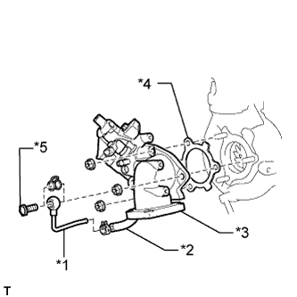 |
Выверните пустотелый соединительный болт-штуцер и снимите прокладку с выходного патрубка турбины.
| *1 | Перепускной патрубок охлаждающей жидкости № 4 |
| *2 | Перепускной шланг охлаждающей жидкости № 12 |
| *3 | Выходной патрубок турбины |
| *4 | Прокладка |
| *5 | Пустотелый соединительный болт-штуцер |
Отсоедините перепускной патрубок охлаждающей жидкости № 4 от перепускного шланга охлаждающей жидкости № 12.
Отверните 3 гайки и снимите выходной патрубок турбины и прокладку.
| 13. СНИМИТЕ ТРУБКУ ВЕНТИЛЯЦИИ КАРТЕРА |
 |
Выверните болт и отсоедините 2 шланга вентиляции картера и трубку вентиляции картера.
| 14. СНИМИТЕ ТЕПЛОЗАЩИТНЫЙ ЭКРАН ТУРБИНЫ № 1 |
 |
Выверните 2 болта и снимите теплозащитный экран турбины № 1.
| 15. СНИМИТЕ ТЕПЛОЗАЩИТНЫЙ ЭКРАН ВЫПУСКНОГО КОЛЛЕКТОРА № 1 |
Выверните 2 болта и снимите теплозащитный экран выпускного коллектора № 1.
| 16. ОТСОЕДИНИТЕ ТРУБКУ ЩУПА ПРОВЕРКИ УРОВНЯ МОТОРНОГО МАСЛА В СБОРЕ |
Выверните болт.
Отсоедините трубку щупа проверки уровня моторного масла.
| 17. ОТСОЕДИНИТЕ ШЛАНГ ОХЛАЖДАЮЩЕЙ ЖИДКОСТИ ТУРБИНЫ № 1 |
Отсоедините шланг охлаждающей жидкости турбины № 1 от перепускного патрубка охлаждающей жидкости № 2.
| *1 | Шланг охлаждающей жидкости турбины № 1 |
| *2 | Шланг охлаждающей жидкости турбины № 3 |
| 18. ОТСОЕДИНИТЕ ШЛАНГ ОХЛАЖДАЮЩЕЙ ЖИДКОСТИ ТУРБИНЫ № 3 |
Отсоедините шланг охлаждающей жидкости турбины № 3 от перепускного патрубка охлаждающей жидкости № 2.
| 19. СНИМИТЕ КРОНШТЕЙН ТУРБОНАГНЕТАТЕЛЯ |
 |
Выверните 2 болта, отверните гайку и снимите опору турбонагнетателя.
| 20. СНИМИТЕ КРОНШТЕЙН ЗАЖИМА ЖГУТА ПРОВОДОВ |
Выверните болт и снимите кронштейн зажима жгута проводов.
| 21. СНИМИТЕ ТРУБКУ ПОДВОДА МАСЛА К ТУРБИНЕ В СБОРЕ |
 |
Выверните 2 болта, отверните 2 гайки, выверните пустотелый соединительный болт-штуцер и снимите трубку подвода масла к турбине и 3 прокладки.
| 22. СНИМИТЕ ВЫПУСКНОЙ КОЛЛЕКТОР С ТУРБОНАГНЕТАТЕЛЕМ |
 |
Отверните 8 гаек и снимите 8 плоских шайб с выпускного коллектора с турбонагнетателем.
Снимите выпускной коллектор с турбонагнетателем и прокладку.
| 23. СНИМИТЕ ТРУБКУ ЩУПА ПРОВЕРКИ УРОВНЯ МОТОРНОГО МАСЛА В СБОРЕ |
| 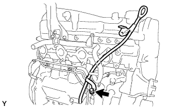 |
Выверните болт и снимите трубку щупа проверки уровня масла.
| 24. СНИМИТЕ ОПОРУ КОЛЕНЧАТОГО ПАТРУБКА КОМПРЕССОРА |
Выверните 3 болта и снимите опору коленчатого патрубка компрессора.
| 25. СНИМИТЕ ПЕРЕПУСКНОЙ ПАТРУБОК ОХЛАЖДАЮЩЕЙ ЖИДКОСТИ № 5 В СБОРЕ |
Отсоедините 3 шланга.
Выверните 2 болта, отверните гайку и снимите перепускной патрубок охлаждающей жидкости № 5.
| 26. СНИМИТЕ ПЕРЕПУСКНОЙ ПАТРУБОК ОХЛАЖДАЮЩЕЙ ЖИДКОСТИ № 2 В СБОРЕ |
 |
Выверните болт, отверните гайку и снимите перепускной патрубок охлаждающей жидкости № 2.
| 27. СНИМИТЕ КРОНШТЕЙН КРЫШКИ ДВИГАТЕЛЯ № 2 |
Выверните 2 болта и снимите кронштейн крышки двигателя № 2.
| 28. СНИМИТЕ ВАКУУМНУЮ ТРУБКУ № 3 В СБОРЕ |
| 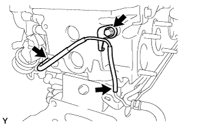 |
Отсоедините 2 вакуумных шланга.
Выверните болт и отсоедините вакуумную трубку № 3.
| 29. СНИМИТЕ ВАКУУМНУЮ ТРУБКУ № 1 |
Выверните болт и отсоедините вакуумную трубку № 1.
| 30. СНИМИТЕ ИЗОЛЯТОР БЛОКА ЦИЛИНДРОВ № 2 |
 |
Снимите изолятор блока цилиндров № 2 с правого переднего кронштейна опоры двигателя № 1.
| 31. СНИМИТЕ ВПУСКНОЙ ПАТРУБОК ОХЛАЖДАЮЩЕЙ ЖИДКОСТИ |
Отсоедините разъем, выверните 3 болта и снимите впускной патрубок охлаждающей жидкости.
| 32. СНИМИТЕ ТЕРМОСТАТ |
Снимите термостат.
Снимите прокладку с термостата.
| 33. СНИМИТЕ ИЗОЛЯТОР БЛОКА ЦИЛИНДРОВ № 3 |
| 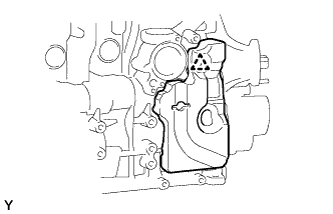 |
Освободите фиксатор и снимите изолятор блока цилиндров № 3.
| 34. СНИМИТЕ ДАТЧИК УРОВНЯ МОТОРНОГО МАСЛА |
Выверните 4 болта и снимите датчик уровня моторного масла.
Срежьте часть прокладки и снимите прокладку с датчика уровня моторного масла.
| 35. СНИМИТЕ ВАКУУМНЫЙ НАСОС В СБОРЕ |
 |
Отверните 2 гайки и снимите вакуумный насос и 2 кольцевых уплотнения.
| 36. СНИМИТЕ ЛОПАСТНОЙ НАСОС В СБОРЕ |
 |
Отверните 2 гайки и снимите лопастной насос и кольцевое уплотнение.
| 37. СНИМИТЕ ДАТЧИК ТЕМПЕРАТУРЫ ОХЛАЖДАЮЩЕЙ ЖИДКОСТИ |
Отсоедините разъем датчика температуры охлаждающей жидкости двигателя.
Снимите датчик температуры охлаждающей жидкости.
Снимите прокладку с датчика температуры охлаждающей жидкости.
| 38. СНИМИТЕ КЛАПАН-ПЕРЕКЛЮЧАТЕЛЬ ДАВЛЕНИЯ МАСЛА В СБОРЕ |
Выверните болт и снимите клапан-переключатель давления масла.
| 39. СНИМИТЕ ДАТЧИК ПОЛОЖЕНИЯ РАСПРЕДВАЛА |
 |
Выверните болт и снимите датчик положения распредвала.
| 40. СНИМИТЕ ДАТЧИК ПОЛОЖЕНИЯ КОЛЕНЧАТОГО ВАЛА |
Отсоедините разъем датчика положения коленчатого вала.
 |
Снимите зажим, обозначенный A на рисунке.
Освободите 3 зажима жгута проводов, выверните болт и снимите датчик положения коленчатого вала.
| 41. СНИМИТЕ КРЫШКУ РЕМНЯ ГАЗОРАСПРЕДЕЛЕНИЯ № 1 |
 |
Выверните 6 болтов и снимите 6 шайб и крышку ремня газораспределения.
| 42. СНИМИТЕ ПРИВОДНОЙ РЕМЕНЬ ГАЗОРАСПРЕДЕЛЕНИЯ |
 |
Поверните коленчатый вал по часовой стрелке и совместите установочные метки, как показано на рисунке.
| *1 | Установочная метка |
 |
Равномерно ослабьте и выверните 2 болта натяжителя приводного ремня газораспределения № 1.
Снимите приводной ремень газораспределения.
 |
| 43. СНИМИТЕ ОПОРНЫЙ РОЛИК ПРИВОДНОГО РЕМНЯ ГАЗОРАСПРЕДЕЛЕНИЯ № 1 В СБОРЕ |
С помощью шестигранного ключа на 10 мм выверните болт и снимите опорный ролик приводного ремня газораспределения № 1 и шайбу.
| 44. СНИМИТЕ ШКИВ КОЛЕНЧАТОГО ВАЛА |
Используя SST, зафиксируйте шкив коленчатого вала и ослабьте болт шкива.
 |
С помощью SST выверните болт шкива и снимите шкив коленчатого вала.
| 45. СНИМИТЕ КОРПУС ДРОССЕЛЬНОЙ ЗАСЛОНКИ ДИЗЕЛЬНОГО ДВИГАТЕЛЯ В СБОРЕ |
| 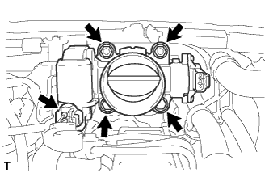 |
Отсоедините разъем двигателя дроссельной заслонки.
Выверните 2 болта, отверните 2 гайки и снимите корпус дроссельной заслонки дизельного двигателя с прокладкой.
| 46. СНИМИТЕ ДАТЧИК АБСОЛЮТНОГО ДАВЛЕНИЯ В КОЛЛЕКТОРЕ |
 |
Отсоедините разъем датчика абсолютного давления в коллекторе и вакуумный шланг.
Выверните болт и снимите датчик абсолютного давления в коллекторе.
| 47. СНИМИТЕ КРОНШТЕЙН КЛАПАНА СИСТЕМЫ СНИЖЕНИЯ ТОКСИЧНОСТИ ОТРАБОТАВШИХ ГАЗОВ |
 |
Выверните болт и снимите кронштейн клапана системы снижения токсичности отработавших газов.
| 48. СНИМИТЕ КРОНШТЕЙН КОРПУСА ДРОССЕЛЬНОЙ ЗАСЛОНКИ |
 |
Выверните 3 болта и снимите кронштейн корпуса дроссельной заслонки.
| 49. СНИМИТЕ ГАЗОВЫЙ ФИЛЬТР № 1 |
 |
Отсоедините вакуумный шланг и снимите газовый фильтр № 1 с кронштейна газового фильтра.
| 50. СНИМИТЕ КРОНШТЕЙН ГАЗОВОГО ФИЛЬТРА |
 |
Освободите зажим, чтобы отсоединить жгут проводов.
 |
Выверните болт и снимите кронштейн газового фильтра.
| 51. СНИМИТЕ КРЫШКУ ГОЛОВКИ БЛОКА ЦИЛИНДРОВ № 2 В СБОРЕ |
 |
Выверните 4 болта и снимите крышку головки блока цилиндров № 2.
| 52. СНИМИТЕ ВАКУУМНУЮ ТРУБКУ № 1 В СБОРЕ |
 |
Отсоедините вакуумный шланг от впускного коллектора.
Выверните болт и отсоедините вакуумную трубку № 1.
| 53. СНИМИТЕ ОПОРУ КОЛЛЕКТОРА С ЭЛЕКТРОВАКУУМНЫМ КЛАПАНОМ |
 |
Отсоедините 3 разъема электровакуумного клапана.
 |
Отсоедините вакуумный шланг № 1.
| 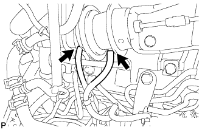 |
Отсоедините 2 вакуумных шланга № 2 от клапана РОГ № 2.
| 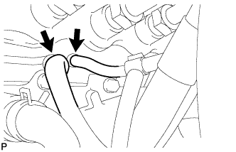 |
Отсоедините вакуумные шланги № 1 и № 4.
 |
Выверните 2 болта и снимите опору коллектора с электровакуумным клапаном.
| 54. ОТСОЕДИНИТЕ ПЕРЕПУСКНОЙ ШЛАНГ ОХЛАЖДАЮЩЕЙ ЖИДКОСТИ |
Освободите 4 хомута перепускного шланга охлаждающей жидкости.
Отсоедините перепускной шланг охлаждающей жидкости № 7, обозначенный символом A на рисунке.
Отсоедините перепускной шланг охлаждающей жидкости № 4, обозначенный символом B на рисунке.
Отсоедините перепускной шланг охлаждающей жидкости № 3, обозначенный символом C на рисунке.
Отсоедините перепускной шланг охлаждающей жидкости № 8, обозначенный символом D на рисунке.
Отсоедините перепускной шланг охлаждающей жидкости № 6, обозначенный символом E на рисунке.
Отсоедините перепускной шланг охлаждающей жидкости № 5, обозначенный символом F на рисунке.

| 55. СНИМИТЕ ТРУБКУ ПОДВОДА ТОПЛИВА |
 |
Выверните болт и снимите зажим топливной трубки высокого давления № 2.
 |
С помощью разрезной головки на 17 мм ослабьте гайки штуцеров и снимите трубку подвода топлива.
| *a | Со стороны топливной системы Common Rail |
| *b | Сторона нагнетающего топливного насоса |
| 56. СНИМИТЕ КРОНШТЕЙН ЗАЖИМА ЖГУТА ПРОВОДОВ |
Отсоедините разъем свечи накаливания.
| 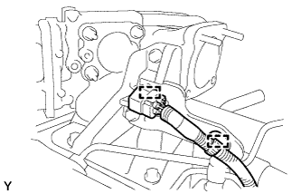 |
Освободите 2 зажима жгута проводов и отсоедините разъем свечи накаливания от кронштейна зажима жгута проводов.
| 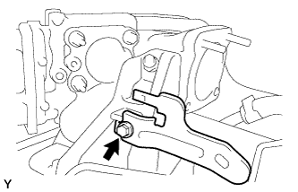 |
Выверните болт и снимите кронштейн зажима жгута проводов.
| 57. СНИМИТЕ ТОПЛИВНЫЕ ТРУБКИ ВЫСОКОГО ДАВЛЕНИЯ № 1, № 2 И № 3 В СБОРЕ |
 |
Отверните 2 гайки и снимите зажим топливной трубки высокого давления № 3.
 |
Выверните 2 болта и снимите 2 зажима топливной трубки высокого давления № 2.
 |
С помощью разрезной головки на 17 мм ослабьте гайки штуцеров и снимите топливные трубки высокого давления № 1, № 2 и № 3.
| *a | Со стороны форсунки |
| *b | Со стороны топливной системы Common Rail |
| 58. СНИМИТЕ ОПОРУ ПАТРУБКА ПОДАЧИ ВОЗДУХА |
Выверните 3 болта и снимите опору патрубка подачи воздуха.
| 59. СНИМИТЕ ЭЛЕКТРИЧЕСКИЙ КЛАПАН УПРАВЛЕНИЯ РОГ В СБОРЕ С КЛАПАНОМ РОГ № 2 И ОХЛАДИТЕЛЕМ РОГ |
Отверните 2 гайки, выверните 5 болтов и снимите электрический клапан управления РОГ вместе с клапаном РОГ № 2 и охладителем РОГ.
Снимите 2 прокладки с головки блока цилиндров и впускного коллектора.
| 60. СНИМИТЕ ЭЛЕКТРИЧЕСКИЙ КЛАПАН УПРАВЛЕНИЯ РОГ В СБОРЕ |
Отверните 2 гайки, выверните болт и снимите патрубок подачи воздуха вместе с электрическим клапаном управления РОГ.
Снимите электрический клапан управления РОГ и 2 прокладки с патрубка подачи воздуха.
| 61. СНИМИТЕ ПЕРЕХОДНИК КЛАПАНА РОГ |
С помощью шестигранного ключа на 6 мм выверните 3 болта с шестигранными головками и снимите 3 плоских шайбы, переходник клапана РОГ и прокладку.
| 62. СНИМИТЕ КЛАПАН РОГ № 2 В СОБРЕ |
Выверните болт и снимите клапан РОГ № 2 и прокладку.
| 63. СНИМИТЕ ИЗОЛЯТОР ОХЛАДИТЕЛЯ РОГ |
 |
Снимите 2 изолятора охладителя РОГ с охладителя РОГ.
| *1 | Изолятор охладителя РОГ № 2 |
| *2 | Изолятор охладителя РОГ № 1 |
| 64. СНИМИТЕ ТОПЛИВНУЮ ТРУБКУ ВЫСОКОГО ДАВЛЕНИЯ № 4 |
 |
Выверните болт, отверните гайку и снимите 2 зажима топливной трубки высокого давления № 2.
 |
С помощью разрезной головки на 17 мм ослабьте гайки штуцеров и снимите топливную трубку высокого давления № 4.
| *a | Со стороны топливной системы Common Rail |
| *b | Со стороны форсунки |
| 65. СНИМИТЕ ТОПЛИВОПРОВОД № 2 |
 |
С помощью шестигранного ключа на 6 мм выверните пустотелый соединительный болт-штуцер и снимите прокладку.
 | Пустотелый соединительный болт-штуцер |
 | Топливный обратный клапан |
Снимите обратный топливный клапан, прокладку и топливопровод № 2.
| 66. СНИМИТЕ ТРУБОПРОВОД ОБРАТНОГО СЛИВА ТОПЛИВА № 3 |
 |
Отсоедините 2 топливных шланга.
| Топливный обратный клапан |
Выверните 2 болта.
Снимите обратный топливный клапан, прокладку и трубопровод обратного слива топлива № 3.
| 67. СНИМИТЕ ТРУБОПРОВОД ОБРАТНОГО СЛИВА ТОПЛИВА № 2 |
| 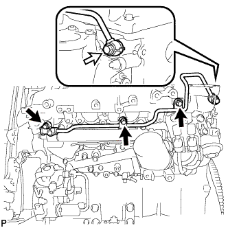 |
Выверните 3 болта.
| Пустотелый соединительный болт-штуцер |
Выверните пустотелый соединительный болт-штуцер и снимите прокладку и трубопровод обратного слива топлива № 2.
| 68. СНИМИТЕ КОМПЛЕКТ ЭЛЕКТРОВАКУУМНОГО КЛАПАНА |
Отсоедините 2 разъема электровакуумного клапана.
 |
Отсоедините 3 вакуумных шланга, а затем выверните 2 болта и снимите комплект электровакуумного клапана.
| 69. СНИМИТЕ ОПОРУ ВПУСКНОГО ПАТРУБКА |
| 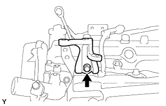 |
Выверните болт и снимите опору впускного трубопровода.
| 70. СНИМИТЕ ТЕПЛОЗАЩИТНЫЙ ЭКРАН ВПУСКНОГО КОЛЛЕКТОРА |
| 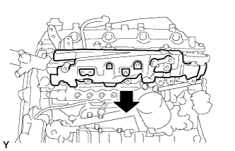 |
Снимите изолятор впускного коллектора.
| 71. СНИМИТЕ ВПУСКНОЙ КОЛЛЕКТОР |
| 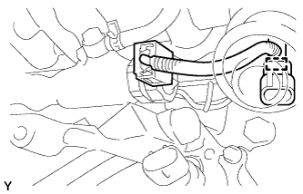 |
Отсоедините зажим разъема жгута проводов датчика от впускного коллектора.
| 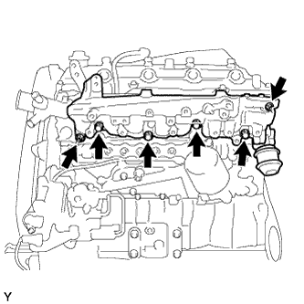 |
Отверните 2 гайки, выверните 4 болта и снимите впускной коллектор и прокладку.
| 72. СНИМИТЕ РАЗЪЕМ СВЕЧИ НАКАЛИВАНИЯ № 1 |
Отсоедините разъем свечи накаливания № 1 от жгута проводов.
 |
Снимите 4 уплотнительные шайбы винта.
| 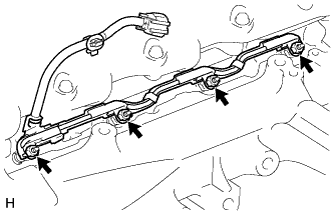 |
Отверните 4 гайки и снимите разъем свечи накаливания № 1.
| 73. СНИМИТЕ ИЗОЛЯТОР ВПУСКНОГО КОЛЛЕКТОРА № 1 |
 |
| 74. СНИМИТЕ СВЕЧУ НАКАЛИВАНИЯ В СБОРЕ |
 |
С помощью удлиненной торцевой головки на 12 мм снимите 4 свечи накаливания.
| 75. СНИМИТЕ МАСЛЯНЫЙ ФИЛЬТР В СБОРЕ |
Снимите масляный фильтр с помощью SST.
| 76. СНИМИТЕ ТОПЛИВНУЮ СИСТЕМУ COMMON RAIL В СБОРЕ |
Отсоедините разъем клапана сброса давления.
Выверните 2 болта и снимите топливную систему Common Rail.
| 77. СНИМИТЕ ИЗОЛЯТОР ВПУСКНОГО КОЛЛЕКТОРА № 2 |
Снимите изолятор впускного коллектора № 2
| 78. СНИМИТЕ ИЗОЛЯТОР ТОПЛИВНОГО НАСОСА ВЫСОКОГО ДАВЛЕНИЯ |
 |
| 79. СНИМИТЕ ЭЛЕМЕНТ ЗАЩИТЫ ТОПЛИВНОГО НАСОСА ВЫСОКОГО ДАВЛЕНИЯ № 1 |
 |
Выверните 2 болта и снимите элемент защиты топливного насоса высокого давления № 1.
| 80. СНИМИТЕ ТОПЛИВНЫЙ НАСОС В СБОРЕ |
 |
Выверните 4 болта, указанные стрелками на рисунке.
Снимите фланец зубчатого колеса распредвала № 2 и шкив приводного вала насоса.
 |
Отверните установочную гайку и снимите кольцевое уплотнение, удерживая шкив коленчатого вала с помощью SST.
 |
Ослабьте 2 гайки.
Отсоедините нагнетающий топливный насос от шестерни насоса высокого давления с помощью SST.
Отверните 2 гайки и снимите нагнетающий топливный насос.
Снимите кольцевое уплотнение.
| 81. СНИМИТЕ ВЫПУСКНОЙ ПАТРУБОК ОХЛАЖДАЮЩЕЙ ЖИДКОСТИ |
Выверните 2 болта и снимите прокладку и выпускной патрубок охлаждающей жидкости.
| 82. СНИМИТЕ ВАКУУМНУЮ ТРУБКУ № 2 В СБОРЕ |
Отсоедините вакуумный шланг.
Отверните 2 гайки и снимите вакуумную трубку № 2.
| 83. СНИМИТЕ КРЫШКУ МАСЛЯНОГО РАДИАТОРА В СБОРЕ |
 |
Выверните 13 болтов и снимите крышку масляного радиатора.
| 84. СНИМИТЕ ВАКУУМНУЮ ТРУБКУ № 1 В СБОРЕ |
 |
Выверните болт, отверните гайку и отсоедините вакуумную трубку № 1.
| 85. СНИМИТЕ КРЫШКУ МАСЛЯНОГО ПОДДОНА № 1 В СБОРЕ |
 |
Выверните 4 болта и снимите крышку масляного поддона № 1.
| 86. СНИМИТЕ КРОНШТЕЙН ПЕРЕДНЕЙ ОПОРЫ ДВИГАТЕЛЯ № 1 |
 |
Выверните 8 болтов и снимите 2 кронштейна передней опоры двигателя № 1.
| *A | Для левой стороны |
| *B | Для правой стороны |